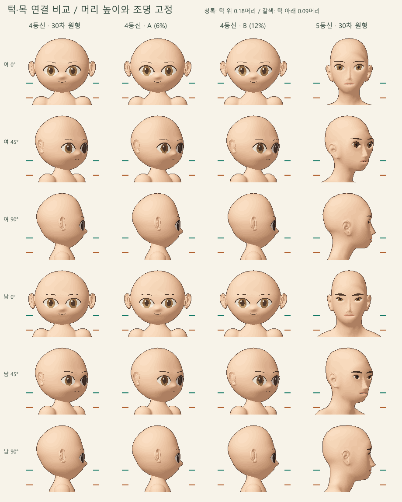

전신·얼굴 회전 · 64방향 회전표
30차는 기존 기본형으로 마감
4등신에서 5등신으로 넘어갈 때의 턱과 목을 같은 머리 높이에서 비교했다. 작은 기본형의 턱을 좁히면 정면 단면 차이는 줄어들지만, 90도에서 볼·입·턱·목의 앞뒤 연결은 개선되지 않았다. 두 실험 후보를 기본값으로 채택하지 않았다. 인체의 미적 승인은 여전히 보류다.

행: 여성과 남성의 0·45·90도. 열: 4등신 원형, 턱 축소 A·B, 5등신 원형. 눈과 코에 영향을 주는 정도는 변형 부위의 높이에 따라 달라진다. 색선은 측정 높이 표시다.어디까지 달라졌나
| 단면 (머리 높이=1) | 4 원형 | 4 A | 4 B | 5 여성 / 남성 |
|---|
| 턱 위 0.18에서의 폭 | 0.7682 | 0.7353 | 0.7025 | 0.5110 / 0.4875 |
| 턱 아래 0.09, 중앙 연결 단면 폭 | 0.4550 | 0.4550 | 0.4550 | 0.4049 / 0.6625 |
A·B에서 변한 것은 아래 얼굴의 가로 폭이다. 몸·관절과 정중선의 앞뒤 위치는 그대로다. 측면을 고치려면 코·입술·턱끝과 목 앞선을 함께 설계해야 한다. 중앙 단면이 목 주변 피부와 이어지는 방식은 모델마다 다르므로 위 값을 정답 비례로 삼지 않는다.
실제 연구 화면 확인
로컬 Edge에서 좌우 버튼, 상하 각도 선택, 4→5등신·남녀 전환, 한쪽 손 확대를 조작했다. 512px 비교 PNG(1024×512)를 직접 내려받아 오른쪽 절반이 화면 픽셀과 같음을 확인했다. 가로 390px에서 문서 전체가 넘치지 않았다. 29·30차 남녀 2~8등신 회전표 28장이 모두 표시됐다. 브라우저 오류와 실패한 HTTP 응답은 0건이다.
브라우저 검증 결과 · 단면 측정 원본
이번 결과는 로컬 연구 화면과 30차 마감을 위한 것이다. 실물 휴대폰, 운영 웹앱 배포, 사용자 인체 승인, 체형·의상·동작 확장은 포함하지 않는다.